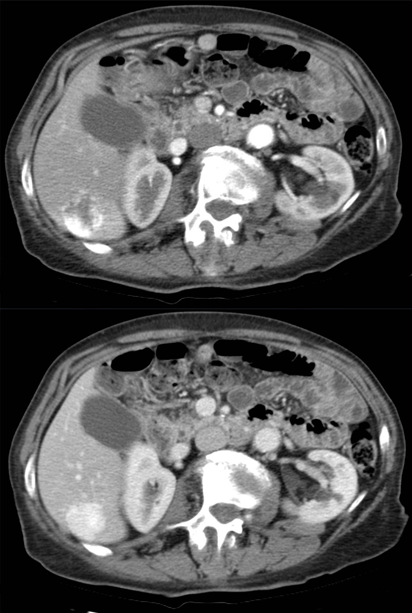
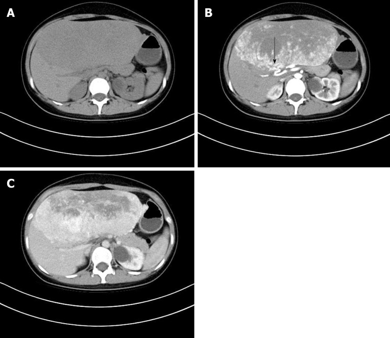
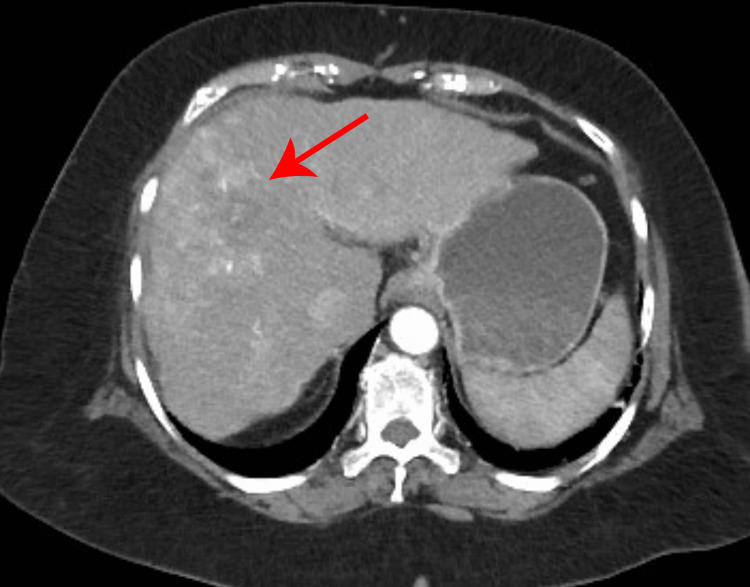
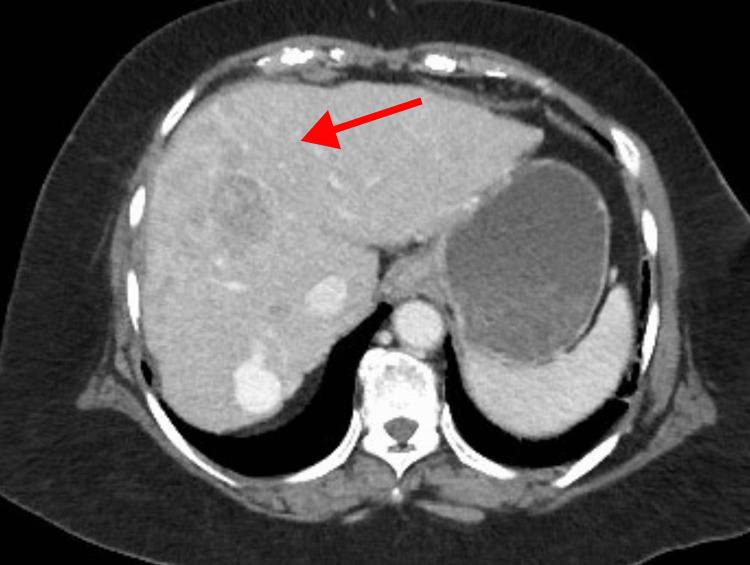

Tumores hepáticos: aprender a ler a tomografia como um radiologista
Esta é a aula bônus do módulo — e a que mais muda seu olhar. O fígado é o único órgão em que o tumor benigno também mata (e cai mais que o maligno). Aqui você sai capaz de ler uma TC dinâmica trifásica com duas perguntas apenas: como o tumor capta o contraste, e como ele o devolve. Da enfermeira que morreu de um adenoma roto ao fígado que se faz crescer para operar — 14 páginas.
perfusão · contraste
14páginas
26questões
6esquemas interativos
2 perguntasa chave da TCcaptação + washout
Trilha da aula
Armadilhas que esta aula desarma
O hemangioma é o tumor hepático mais comum — não o cisto.
Tumor hepático que sangrou = adenoma, mesmo que a TC pareça outro.
Washout (hiper→hipo) = câncer. O adenoma é hiper→iso (some, não faz washout).
Só a hepatite B causa CHC sem passar pela cirrose.
O tumor maligno hepático mais comum é metástase, não o hepatocarcinoma.
Pontes com as aulas 1 → 3
Não biopsiar víscera sólida: a mesma regra de ouro da Aula 1 (esôfago), agora com uma segunda razão — sangra.
Metástase hepática que cura: o gancho da Aula 3 (colorretal) se abre aqui em volumetria e ressecção.
Marcador tumoral: depois de CEA (cólon) e CA 72-4 (estômago), entra a alfa-fetoproteína do CHC.
O que a banca quer desta aula
Saber ler a TC dinâmica (captação arterial + washout), reconhecer cada tumor por seu padrão de imagem (hemangioma, HNF, adenoma, CHC, metástase), lembrar que tumor que sangra é adenoma, que washout é câncer, que cirrose é o fator de risco do CHC com a alfa-fetoproteína como marcador, e a lógica de tratamento: Child/Milão no CHC e volumetria nas metástases.
Página 2 / 14
Caso 7 · emergência
Enfermeira, 45 anos: ao sair do plantão, mal-estar súbito, dor abdominal difusa e síncope que a levam à emergência. Sem hipertensão, diabetes, tabagismo, etilismo ou uso de drogas intravenosas. À admissão: hipotensa, taquipneica, glicemia capilar 110. Iniciada ressuscitação volêmica. Estabilizada, vai à TC — e o fígado mostra uma massa com uma área "pretinha" no meio.
O caso da enfermeira: o tumor do bem que matou
Você ainda não precisa ser radiologista para olhar aquela tomografia e perceber duas coisas: que é um fígado, e que ali no meio dele há algo que não deveria estar. É uma massa — e, numa aula de tumores, o reflexo é pensar em tumor. Só que parte dela está escura, "pretinha". Aquele preto, no contexto agudo de uma paciente que desmaiou e está hipotensa, tem nome: sangue. Ela tem um tumor hepático que está sangrando.
Ato 1Chegada. Síncope + dor abdominal + hipotensão. Ressuscitação volêmica estabiliza o quadro. A TC revela a massa hepática com a área hemorrágica.
Ato 2Recidiva. Ao longo do dia, volta a instabilizar e surge irritação peritoneal. Indica-se laparotomia exploradora.
Ato 3O achado. No inventário da cavidade, hemorragia de vulto de origem hepática, de difícil controle hemostático. Apesar de todo o empenho, evolui para choque refratário e óbito em 12 horas.
A perguntaEra um tumor maligno? Matou a paciente — mas isso não obriga histologia maligna. No fígado, o tumor benigno também mata: era um adenoma hepático roto.
Aqui está a virada que organiza a aula inteira. Em todos os outros tumores do tubo digestivo, só os malignos importavam — são eles que se opera, conduz, trata. No fígado há um detalhe que muda o jogo: os tumores benignos também merecem atenção, e caem mais na prova que os malignos. O adenoma é o exemplo perfeito — parece do bem, mas pode te matar sangrando. É o "duas-caras" desta aula.
A pista que entrega o diagnóstico
Mesmo sem a sequência completa de imagens, o enunciado já entrega: tumor hepático + dor abdominal + sangramento + instabilidade = adenoma hepático roto. Guarde essa associação — ela transpassa até a imagem: tumor hepático que sangra, marca adenoma.
Pergunta
Na TC da enfermeira, a área "pretinha" (hipodensa) no interior da massa hepática, no contexto de hipotensão e dor abdominal súbita, corresponde mais provavelmente a:
Correta. Massa hepática com componente hipodenso agudo + síncope + hipotensão = tumor que sangrou. O preto, no contexto agudo, é sangue — e é o que mata a paciente por choque hemorrágico.
Errada. Ar livre também é hipodenso, mas não fica "dentro" de uma massa hepática nem explica a hemorragia de origem hepática vista na laparotomia. O cenário é sangramento tumoral, não perfuração.
Errada. Cálculo é hiperdenso (branco), não "pretinho". E litíase intratumoral hepática não causa síncope por hipovolemia.
Errada — subestima o achado. Atribuir a artefato ignora o quadro clínico de choque que se desenrolou. O achado é central: é o sangramento que matou a paciente.
Pergunta
A paciente morreu de um tumor hepático. Isso obriga que o tumor fosse maligno?
Errada. É justamente a pegadinha que a aula desarma. No fígado, o tumor benigno mata pelo sangramento, não pela malignidade histológica.
Correta. O adenoma é benigno, mas hipervascularizado: pode romper e sangrar até o choque. "Matar" não é sinônimo de "histologia maligna" no fígado.
Errada. O sangramento espontâneo é característico justamente do adenoma (benigno). Ligar sangramento exclusivamente a malignidade inverte o conceito-chave.
Errada — vaga demais. Pode-se, sim, raciocinar: tumor hepático que sangra aponta fortemente o adenoma. A alternativa foge da inferência que o caso permite.
Página 3 / 14
A regra de ouro: por que o fígado não se biopsia
Como no esôfago da Aula 1, vale a regra de ouro da biópsia: enquanto for um tumor, não se fica biopsiando — só se faz biópsia quando se consegue tirar um pedaço sem espalhar célula neoplásica pelo peritônio. Em víscera sólida sem acesso endoscópico, isso não é possível. No fígado, porém, há uma segunda razão, exclusiva: se a agulha pegar um vaso importante de um tumor hipervascularizado, ele sangra — e pode sangrar até o paciente morrer.
Não se biopsia
Vísceras sólidas / sem acesso endoscópico
Fígado, pâncreas, rim, baço, jejuno, íleo, sarcoma de retroperitônio, ovário. Risco de disseminar célula pelo trajeto. No fígado, soma-se o risco de hemorragia. Diagnóstico = imagem.
Pode biopsiar
Acesso endoscópico (tubo digestivo)
Esôfago e estômago (EDA), cólon e reto (colonoscopia). Pega-se o fragmento por dentro do tubo, sem semear o peritônio. Foi a lógica das Aulas 1 a 3.
A consequência prática
Se o diagnóstico não pode vir da agulha, ele tem que vir da imagem. E não de qualquer imagem: a TC ou a ressonância dinâmica/trifásica, lida do jeito certo. É por isso que, daqui em diante, a aula te transforma num leitor de tomografia hepática — não há como escapar disso.
O detalhe exclusivo do fígado
No tubo digestivo, a razão de não biopsiar é semear célula. No fígado, há duas: semear célula e sangrar. Beliscar um tumor hipervascularizado pode abrir uma hemorragia incontrolável.
Pergunta
Por que, diante de uma massa hepática suspeita, a conduta não é a biópsia percutânea de rotina?
Correta. São as duas razões: semear célula neoplásica (como em toda víscera sólida) e, exclusivo do fígado, sangrar ao puncionar um tumor hipervascularizado. Por isso o diagnóstico se firma na TC/RM dinâmica.
Errada. Não é impossível — é indesejável de rotina pelos riscos. A justificativa correta é o risco, não a impossibilidade técnica.
Errada. A histologia diferencia, sim; o problema é o caminho até ela. Evita-se a biópsia pelo risco, não por incapacidade de a histologia distinguir.
Errada — exagero. A imagem é o método de escolha, mas não é infalível. A razão de evitar a biópsia é o risco, não uma suposta perfeição da TC.
Pergunta
Qual destes órgãos permite biópsia diagnóstica de rotina sem o problema de semear o peritônio?
Correta. No tubo digestivo com acesso endoscópico (EDA, colonoscopia), a biópsia é por dentro do lúmen — não dissemina pelo peritônio. Foi a regra das aulas anteriores.
Errada. O pâncreas é víscera sólida sem acesso endoscópico direto à lesão da mesma forma — entra na lista de "não biopsiar" da aula (risco de disseminação).
Errada — é o exemplo central. O fígado é justamente o órgão que não se biopsia: dissemina e ainda sangra. Diagnóstico por imagem.
Errada. O ovário também está na lista de vísceras que se diagnostica por imagem, pelo risco de semear a cavidade.
Página 4 / 14
Ler a TC trifásica: TC ou RM? Qual fase?
A TC dinâmica (ou trifásica) é a imagem mais completa para tumor hepático — e vale também para a ressonância. São três fases após contraste (arterial, portal e venosa/equilíbrio), mais a primeira sem contraste: por isso você costuma ver quatro imagens. Antes de interpretar o tumor, duas perguntas de orientação te situam sempre.
Pergunta 1 — é TC ou ressonância?
Osso branco = TC
Se as costelas e o corpo vertebral aparecem brancos, é tomografia. O osso é o atalho infalível: na TC, ele brilha.
Osso não branco = ressonância
Se o osso não está branco, é ressonância magnética. Mesmo raciocínio de fases (arterial/portal/equilíbrio) — só muda a máquina.
Pergunta 2 — qual fase estou vendo?
A aorta brilhando "feito o sol" = fase arterial
Compare as imagens: a única em que a aorta brilha intensamente é a fase arterial (o contraste acabou de ser injetado e ainda está nas artérias). Nas demais:
Sem contraste: nada brilha; todo tumor fica mais escuro (hipodenso), qualquer que seja a etiologia.
Portal: o contraste já passou para o sistema porta e o parênquima hepático realça.
Equilíbrio (venosa): o contraste se distribuiu; é onde se vê se o tumor já o eliminou ou ainda o retém.
Cuidado com a veia cava: fica perto da aorta e também clareia um pouco na fase arterial. Não confunda a cava com um tumor.
A rotina que nunca falha
Primeiro: osso branco? → TC ou RM. Depois: aorta brilhando feito o sol? → fase arterial. Só então olhe o tumor. Respeitar essa sequência é o que impede você de ser enganado por uma imagem isolada.
Pergunta
Numa imagem abdominal, as costelas e o corpo vertebral aparecem brancos. Trata-se de:
Correta. Osso branco é o atalho da TC: o cálcio ósseo é hiperdenso e brilha. Se o osso brilha, é tomografia.
Errada. Na RM o osso cortical não fica branco dessa forma. Osso branco aponta TC — sinal trocado.
Errada — fora do contexto. A aula trata de TC/RM dinâmica multifásica com contraste; a radiografia simples não avalia captação por fases.
Errada. A US não gera "osso branco" nesse sentido nem a sequência trifásica com contraste descrita aqui.
Pergunta
Na sequência dinâmica, qual achado identifica a fase arterial?
Correta. Na fase arterial o contraste acabou de ser injetado e está nas artérias — a aorta é a única que brilha forte. É o marcador da fase para começar a interpretar o tumor.
Errada. Tumor escuro é típico da fase sem contraste (todo tumor é hipodenso ali). Não identifica a fase arterial.
Errada. A cava até clareia um pouco já na arterial; e o estado da cava não é o marcador da fase. Quem usa a cava como referência se confunde com tumor.
Errada. O parênquima hepático realça mais na fase portal (recebe sangue sobretudo pela porta), não na arterial.
Página 5 / 14
As duas perguntas: captação arterial e washout
Para interpretar uma TC dinâmica de tumor hepático, há só duas coisas a buscar. A primeira: o que o tumor faz com o contraste na fase arterial — ele capta? Capta rápido? Devagar? Só na periferia? A segunda: o washout ("lavar para fora") — como ele elimina o contraste nas fases seguintes. Clique em cada trecho da curva de perfusão para entender o que cada momento revela.
Sobe e desce — é só isso. A subida na fase arterial é a captação (quanto e como); a descida abaixo da linha do parênquima nas fases tardias é o washout. Clique em cada trecho da curva.
Clique num trecho da curva
Toque na subida (captação arterial) ou na descida (washout) para entender as duas perguntas que decidem o diagnóstico na TC dinâmica.
O conceito que muda o gabarito: washout
Washout = captou rápido (hiper) e jogou para fora rápido (vira hipo). Hiper que fica hipo. Se tem washout, é câncer — pode ter o que for ali, mas washout sela o diagnóstico de hepatocarcinoma. E, em geral, quem faz washout também hipercapta na arterial (entrou rápido porque é vascularizado). Essa combinação — hipercaptação arterial + washout — é a assinatura do câncer.
Pergunta
O que define washout na TC dinâmica de um tumor hepático?
Correta. Washout é "hiper vira hipo": captou rápido e eliminou tão rápido que fica mais escuro que o parênquima na portal/equilíbrio. É o achado que sela câncer (CHC).
Errada. Permanecer sempre hiper não é washout — washout exige a queda para hipo nas fases tardias. Aqui não há lavagem.
Errada — é o adenoma. Hiper que vira iso (some, "ninja") é o comportamento do adenoma, não washout. Washout é hiper→hipo.
Errada. Não captar é o padrão hipocaptante (metástase), não washout. Washout pressupõe ter captado antes.
Pergunta
Diante de uma lesão hepática com washout bem definido, a primeira hipótese é:
Correta. "Se tem washout, é câncer." É o achado mais decisivo da TC dinâmica para o CHC; em geral vem acompanhado de hipercaptação arterial.
Errada. O hemangioma capta na periferia de forma centrípeta e retém o contraste — não faz washout. É pouco vascularizado.
Errada. A HNF mantém a imagem em cicatriz/estrela e não faz washout; é lesão benigna por hepatócitos saudáveis.
Errada — quase, mas não. O adenoma hipercapta e fica iso (some) na portal — não faz washout (hiper→hipo). É a distinção fina que a aula cobra.
Página 6 / 14
Os quatro padrões de captação arterial
Toda a interpretação da TC dinâmica se resume a reconhecer quatro padrões de como o tumor capta na fase arterial. Cada um aponta um diagnóstico. Clique em cada lesão do painel — a captação periférica, a cicatriz central, a hipercaptação e a hipocaptação — para fixar quem é quem.
Quatro padrões, quatro diagnósticos. Periférica centrípeta → hemangioma; cicatriz central → HNF; hipercaptação (± washout) → maligno/adenoma; hipocaptante → metástase. Clique em cada lesão.
Clique numa lesão
Toque em cada padrão de captação para ver qual tumor ele representa — a base de todo o resto da aula.
Como isso vira enunciado
A banca descreve a captação e espera o diagnóstico. "Captação periférica globuliforme, centrípeta, com retenção" → hemangioma. "Captação com cicatriz/estrela central" → HNF. "Hipercaptação arterial com washout" → hepatocarcinoma. "Múltiplos nódulos hipocaptantes" → metástases. Reconhecer o padrão é metade da questão.
Pergunta
Lesão hepática que, na fase arterial, capta o contraste apenas na periferia, de forma globuliforme e progredindo para o centro. O padrão sugere:
Correta. Periférica, globuliforme, centrípeta com retenção do contraste é a assinatura do hemangioma — tumor pouco vascularizado, contraste entra e sai devagar.
Errada. O CHC hipercapta de forma difusa e faz washout, não capta "só na beirada". Padrão de captação trocado.
Errada. Metástase é hipocaptante (escura), não capta na periferia em glóbulos. Padrão oposto.
Errada. A HNF capta tudo ao redor com o centro não captante (cicatriz/estrela), não a periferia. Inverte onde está o contraste.
Pergunta
Fígado com múltiplos nódulos hipocaptantes na fase arterial. O diagnóstico mais provável é:
Correta. Hipocaptante = veio de fora, não é do fígado; múltiplos nódulos reforçam metástase. A origem mais comum é o colorretal — o gancho da Aula 3.
Errada. Hemangioma capta na periferia (não é hipocaptante) e o quadro de "múltiplos nódulos" aponta metástase, não lesão benigna única.
Errada. A HNF é hipercaptante com cicatriz central, geralmente solitária — não combina com múltiplos nódulos hipocaptantes.
Errada. O adenoma é hipervascularizado (hipercapta), não hipocaptante. Padrão de captação trocado.
Página 7 / 14
Hemangioma: o tumor hepático mais comum de todos
Vínculo mental que a prova adora: qual é o tumor hepático mais comum de todos — benigno ou maligno? Hemangioma. A banca tenta te enganar com palavras intuitivas: "tumor benigno comum, tipo cisto". Cisto hepático não é comum — inclusive lembra doença parasitária (equinococose). Cisto é comum em outros lugares (pilonidal, sebáceo), não no fígado. No fígado, o campeão é o hemangioma; em segundo, a hiperplasia nodular focal.
Antes da imagem, saiba o que procurar: o hemangioma é pouco vascularizado, apesar do nome. Ele tem muito vaso, mas são vasos "bobos" — o sangue não entra rápido nem sai rápido. Por isso a captação é periférica, globuliforme, centrípeta (avança de fora para o centro nas fases seguintes) e o contraste fica retido na fase de equilíbrio. E, ponto-chave: hemangioma não sangra espontaneamente — só sangra se você cortá-lo.
Da borda ao centro, e retém. Glóbulos na periferia (arterial) → preenchimento centrípeto (portal) → contraste retido (equilíbrio): a assinatura do hemangioma. Não importa o tamanho — existe até o hemangioma gigante. Clique em cada fase.
Clique numa fase
Toque na fase arterial, portal ou de equilíbrio para seguir como o contraste preenche o hemangioma de fora para dentro e fica retido.
O esquema acima mostra o padrão; veja agora o mesmo padrão numa TC real. São duas fases empilhadas do mesmo paciente — em cima a arterial, embaixo a portovenosa. Procure exatamente o que o esquema te ensinou: os glóbulos na borda na fase de cima e o preenchimento de fora para dentro na de baixo.

O que você está vendo: na fase arterial (acima), o contraste aparece em glóbulos na periferia da lesão — o centro ainda escuro. Na fase portovenosa (abaixo), o contraste avança da borda para o centro: o padrão centrípeto. É a confirmação real do que o esquema ao lado mostra — os glóbulos na borda viram preenchimento centrípeto. Não há washout: o contraste fica retido, porque o hemangioma é pouco vascularizado.
Hellerhoff, via Wikimedia Commons · CC BY-SA 4.0
Cicatriz/estrela central não captante, resto hipercaptante
2º mais comum. Hepatócitos saudáveis (capta Primovist).
Adenoma
Hipercaptação arterial, fica iso na portal (some)
Hormonal, mulher jovem. Sangra e pode malignizar.
A pegadinha do "comum"
A banca oferece "cisto hepático" como o tumor benigno mais comum. Não é. Cisto no fígado é incomum (e lembra equinococose). O mais comum é o hemangioma; o segundo, a HNF.
Pergunta
Qual é o tumor hepático mais comum de todos (benignos e malignos)?
Correta. Independentemente de ser benigno ou maligno, o hemangioma é o tumor hepático mais comum. O segundo lugar entre os benignos é a HNF.
Errada — a pegadinha clássica. Cisto hepático não é comum; inclusive sugere doença parasitária (equinococose). O comum é o hemangioma.
Errada. O CHC é o maligno primário mais comum, mas perde para o hemangioma no geral. A pergunta é "de todos".
Errada. O adenoma não é tão comum; dele guarda-se o vínculo hormonal e o sangramento, não a prevalência.
Pergunta
Sobre o comportamento do hemangioma, qual afirmação está correta?
Correta. Apesar do nome, tem "vasos bobos" — pouco vascularizado. Captação periférica centrípeta com retenção, e não sangra espontaneamente (só se cortado).
Errada. Washout é do câncer. O hemangioma é pouco vascularizado e retém o contraste — o oposto do washout.
Errada. Quem sangra espontaneamente é o adenoma. O hemangioma só sangra se cortado — não espontaneamente.
Errada — é a HNF. Cicatriz/estrela central é o padrão da hiperplasia nodular focal, não do hemangioma (que capta na periferia).
Página 8 / 14
Hiperplasia nodular focal: a cicatriz central
O nome não ajuda em nada: "hiperplasia nodular focal". Mas o mecanismo explica tudo. No meio do fígado nasce uma malformação vascular — um vaso "bobo", que não capta nem elimina contraste rápido. Esse vaso, porém, produz fatores de crescimento que estimulam os hepatócitos ao redor a se proliferar em nódulos. Daí o nome: hiperplasia (hepatócitos multiplicando), nodular (em nódulos), focal (só ao redor da malformação).
Na imagem, isso vira uma cicatriz central em estrela: ao redor, os hepatócitos hiperplasiados captam rápido (hipercaptantes); no meio, o vaso bobo não capta. Na fase portal, as cores se invertem — o centro clareia e a periferia escurece — mas a imagem em estrela permanece o tempo inteiro.
Quando HNF e adenoma se confundem — o Primovist resolve
Um adenoma com cicatriz central (de um sangramento antigo) pode imitar a HNF, e a fase portal nem sempre separa as duas. Nesse impasse, usa-se o padrão-ouro: a ressonância com contraste hepatoespecífico (Primovist), captado apenas por hepatócitos saudáveis. Alterne abaixo.
Captou → hepatócitos saudáveis → HNF
A HNF é feita de hepatócitos comuns, apenas hiperestimulados — sem mutação. Eles captam o contraste hepatoespecífico. Captou = HNF. Conduta: apenas acompanhar (lesão benigna, não preocupa).
Não captou → hepatócitos mutantes → adenoma
O adenoma é feito de hepatócitos mutantes (e o CHC, de células que viraram carcinoma) — eles não captam o Primovist. Não captou = adenoma. Aí muda a conduta (próxima página): adenoma sangra e pode malignizar.
A regra do Primovist em uma frase
Contraste hepatoespecífico só entra em hepatócito saudável. Captou = saudável = HNF (acompanha). Não captou = mutante = adenoma (preocupa).
Pergunta
Qual achado de imagem caracteriza a hiperplasia nodular focal?
Correta. Hepatócitos hiperplasiados captam rápido ao redor; o centro (a malformação vascular boba) não capta — a imagem em estrela/cicatriz que persiste em todas as fases.
Errada — é o hemangioma. Periferia em glóbulos é hemangioma; a HNF capta ao redor com o centro vazio (cicatriz). Padrão trocado.
Errada — é o CHC. Washout sela câncer. A HNF é benigna e não faz washout; mantém a cicatriz central.
Errada — é a metástase. Hipocaptante difuso é metástase; a HNF é hipercaptante ao redor da cicatriz.
Pergunta
Para diferenciar HNF de adenoma quando a TC é ambígua, usa-se RM com contraste hepatoespecífico (Primovist). Se a lesão capta o contraste, conclui-se:
Correta. O contraste hepatoespecífico só é captado por hepatócitos saudáveis. Captou = HNF, que se apenas acompanha.
Errada — inverte. Hepatócitos mutantes do adenoma NÃO captam o Primovist. Captou aponta justamente o contrário: HNF.
Errada. As células do CHC tampouco captam o hepatoespecífico (não são saudáveis). Captar aponta HNF, não câncer.
Errada. Metástase não é tecido hepático saudável e não capta o Primovist. Captação = HNF.
Página 9 / 14
Tumor hepático que sangrou? Marque adenoma.
O reflexo que esta página instala
Adenoma: o duas-caras que sangra
O adenoma é o "duas-caras" dos tumores benignos do fígado: parece do bem, mas pode matar sangrando — e é tipicamente da mulher jovem. Por quê jovem? Porque o adenoma é um tumor hormonal: quanto mais hormônio circulante, mais chance e maior ele fica. Daí a associação forte com anticoncepcional oral e anabolizantes. Diferente dos malignos do tubo (homem velho com hábitos ruins), aqui o perfil muda: tumor benigno do fígado é da mulher.
Por dentro, é uma sequência adenoma → carcinoma: um hepatócito normal acumulou mutações e virou adenoma. Por isso ele é hipervascularizado (hipercapta), tem potencial de malignizar e, como cresce muito vascularizado, pode romper e sangrar — exatamente o que matou a enfermeira do caso.
O sinal que vence a imagem
"A TC descreveu hemangioma, então é hemangioma."
Se o enunciado diz que o tumor hepático sangrou espontaneamente, marque adenoma — mesmo que a descrição de imagem lembre hemangioma ou HNF. O sangramento espontâneo transpassa a imagem: hemangioma e HNF não sangram sozinhos; o adenoma, sim.
O detalhe de imagem que separa adenoma de washout
O adenoma hipercapta na fase arterial e, na fase portal, fica isodenso — "some", some como um ninja que joga uma bomba de fumaça. Isso o diferencia do washout do câncer: washout é hiper → hipo (fica mais escuro que o parênquima); o adenoma é hiper → iso (mistura-se ao parênquima). Pode ter uma cicatriz no meio (foco de hemorragia antigo), o que confunde com HNF — aí entra o Primovist.
Conduta no adenoma — a régua dos 5 cm
Até 5 cm: não precisa operar de imediato. Suspender hormônios (trocar anticoncepcional oral por DIU de cobre; interromper anabolizante) e acompanhar. Risco de ruptura/malignização é menor.
Maior que 5 cm:operar (ressecar) — mesmo com suspensão hormonal. O limite é esse.
Mutação da beta-catenina (independentemente do tamanho): operar — chance de virar câncer é quase 100%. É a pior das mutações do adenoma.
Sangrando agora (como a enfermeira, instável): não se faz hepatectomia na urgência (paciente instável morre). Controla-se o sangramento por hemodinâmica — angiografia + embolização do vaso nutridor. A cirurgia eletiva vem depois, estabilizado.
Veja o adenoma numa TC real, no perfil clássico: uma mulher jovem com lesão volumosa. Repare na fase arterial — a lesão realça (hipercapta) e mostra a artéria nutridora, justamente o vaso que a embolização ataca quando o adenoma sangra. É o tumor hipervascularizado que pode romper.

O que você está vendo: três painéis do mesmo adenoma volumoso em mulher jovem — sem contraste (A), fase arterial (B) e fase portal (C). Na fase arterial (B), a lesão realça e a artéria nutridora fica visível (seta) — é o vaso que a hemodinâmica emboliza quando esse tumor sangra. O perfil bate com a regra: adenoma é tumor hipervascularizado da mulher jovem.
World J Clin Cases 2019;7(23):4111-4118 (PMC6906579) · CC BY-NC 4.0
Pergunta
Mulher jovem em uso de anticoncepcional oral chega com dor abdominal súbita e tumor hepático que sangrou. O diagnóstico mais provável é:
Correta. Mulher jovem + hormônio + tumor hepático que sangra = adenoma. O sangramento espontâneo é a marca registrada e transpassa até a descrição de imagem.
Errada. O hemangioma não sangra espontaneamente — só se cortado. O sangramento aponta adenoma, mesmo se a imagem lembrar hemangioma.
Errada. A HNF é benigna e não sangra espontaneamente. O contexto hormonal + sangramento define adenoma.
Errada. Cisto simples não é hipervascularizado nem rompe com hemorragia de vulto. Não explica o sangramento.
Pergunta
Adenoma hepático de 4 cm em mulher usando anticoncepcional, sem sangramento e sem mutação da beta-catenina. A conduta é:
Correta. Até 5 cm, sem beta-catenina e sem sangramento: suspende o hormônio (troca por DIU de cobre) e acompanha. O limite cirúrgico é 5 cm.
Errada. Operar todo adenoma é exagero. Abaixo de 5 cm, sem mutação e sem sangramento, a conduta é suspender hormônio e acompanhar.
Errada — é para o que sangra. A embolização é a conduta do adenoma sangrando e instável, não do adenoma pequeno estável.
Errada. Manter o hormônio é o erro central: ele alimenta o adenoma e aumenta risco de ruptura/malignização. Tem que suspender.
Página 10 / 14
Hepatocarcinoma: cirrose, alfa-fetoproteína e washout
O hepatocarcinoma (CHC ou carcinoma hepatocelular) é o tumor maligno primário mais comum do fígado. O grande fator de risco é a cirrose — daquela aula de hipertensão portal do início do ano. Cirrose por hepatite C (principal causa) ou B, por doença hepática gordurosa (antiga esteatose), por álcool: tudo que causa cirrose pode causar CHC. Regra fina: para gerar CHC, é preciso passar pela cirrose — exceto a hepatite B, a única que pula a etapa da cirrose.
Marcador tumoral: alfa-fetoproteína (AFP). Fechando os marcadores do módulo: CA 19-9 (pâncreas), CEA (colorretal), CA 72-4 (estômago) e alfa-fetoproteína (hepatocarcinoma). Clínica: dor abdominal, podendo ter icterícia e síndrome consumptiva (perda de peso, anemia, fraqueza). E o diagnóstico, como sempre no fígado, é por imagem — não se biopsia.
Hiper na arterial → washout na portal → pseudocápsula. A tríade de imagem que sela o hepatocarcinoma. Clique em cada achado.
Clique num achado do CHC
Toque na hipercaptação arterial, no washout ou na pseudocápsula para montar o diagnóstico de imagem do hepatocarcinoma.
Treine o olho na transição
A leitura que sela o CHC é o par de fases: a lesão branca (hiper) na arterial fica escura (washout) na portal, com a pseudocápsula realçada ao redor. Essa transição hiper→hipo é o que diferencia o câncer do adenoma (hiper→iso, "some").
O esquema mostrou as duas fases em desenho; agora acompanhe a sequência real, fase a fase, num fígado cirrótico. A sequência é a didática — leia da esquerda para a direita e veja a mesma lesão mudar de cor: clara na arterial, escura na venosa, mais escura ainda na tardia. Esse escurecimento progressivo é o washout que sela o diagnóstico.

1 · Arterial — hipercapta (clara)
2 · Venosa — washout (escurece)

3 · Tardia — acentuadamente hipodensa
O que você está vendo: a mesma lesão de CHC em fígado cirrótico, ao longo das três fases. Na arterial fica mais clara que o fígado (hipercaptação); nas fases venosa e tardia torna-se mais escura (washout). É exatamente a transição hiper→hipo que o esquema acima desenhou — e o achado que sela o diagnóstico de hepatocarcinoma sem precisar de biópsia.
Cha/Cureus 2025;17(8):e90327 (PMC12526323) · CC BY 4.0
Pergunta
Qual é o principal fator de risco e o marcador tumoral do hepatocarcinoma?
Correta. A cirrose é o grande fator de risco (hepatite C é a principal causa), e a alfa-fetoproteína é o marcador do CHC — fechando os marcadores do módulo.
Errada. O fator está certo, mas o CEA é do colorretal. O marcador do CHC é a alfa-fetoproteína.
Errada. Anticoncepcional é fator do adenoma (benigno), e CA 72-4 é do estômago. Nada disso é do CHC.
Errada. A doença gordurosa causa CHC geralmente após evoluir para cirrose; e CA 19-9 é do pâncreas. Marcador trocado.
Pergunta
Qual condição pode gerar hepatocarcinoma sem passar pela cirrose?
Correta. Em regra, o CHC exige cirrose prévia — a exceção é a hepatite B, a única que pode causar CHC sem passar pela cirrose.
Errada. A hepatite C causa CHC através da cirrose (é a principal causa de cirrose/CHC), não pulando a etapa.
Errada. A doença gordurosa leva a CHC tipicamente após evoluir para cirrose, não a contornando.
Errada — é a própria cirrose. Aqui a cirrose já está presente; a pergunta é justamente quem dispensa a cirrose, e essa é a hepatite B.
Página 11 / 14
CHC: Child, Milão e o tratamento de Barcelona
O tratamento do CHC é definido pelos critérios de Barcelona (BCLC). O fluxograma oficial é denso — mas a lógica simplificada acerta a imensa maioria das questões. Há três caminhos: ressecar, transplantar ou paliar. O melhor de todos é o transplante (troca o fígado doente inteiro) — mas não há fígado para todos. Então a régua é: opera quem aguenta a cirurgia; quem não aguenta, avalia-se para transplante; quem não cabe em nenhum, palia.
Simplificação que acerta a prova. Child A → resseca. Não-A → avalia Milão para transplante. Dentro de Milão → fila; fora → paliação (TACE ou sorafenibe). Clique em cada decisão.
Clique numa decisão
Toque em cada nó da árvore para seguir a lógica do tratamento do CHC, do Child-Pugh aos critérios de Milão.
Os critérios de Milão (para o transplante)
Os dois critérios que importam
Entra na fila de transplante quem tem até uma lesão de no máximo 5 cm, ou até três lesões de no máximo 3 cm cada. Macete: a soma sempre "dá 6" — 5+1 ou 3+3. Esses são os critérios cobrados.
O óbvio que precisa ser dito
Sem metástase e sem invasão vascular
Os outros dois "critérios" são o óbvio: não pode haver metástase à distância (já seria paliativo) nem invasão vascular relevante (porta, cava, aorta). Se há metástase ou invasão de grandes vasos, não se coloca na fila — é paliação.
A paliação do CHC (fora de Milão)
Não se faz quimioterapia sistêmica tradicional — ela é hepatotóxica, e o fígado já é doente (insuficiência hepática). Em vez disso: quimioembolização (TACE), em que se cateteriza por hemodinâmica a artéria nutridora e se joga o quimioterápico só no tumor, poupando o resto do fígado; ou o sorafenibe, molécula absorvida apenas pelos hepatócitos do CHC.
Pergunta
Quais são os critérios de Milão (tamanho/número) para entrar na fila de transplante por CHC?
Correta. É o critério clássico: uma lesão de até 5 cm OU três lesões de até 3 cm. Macete da soma "dá 6" (5+1, 3+3). Sem metástase e sem invasão vascular.
Errada. Milão limita tamanho e número justamente; "qualquer número" não é critério. E Child A aponta ressecção, não a fila de transplante.
Errada. Número e tamanho estão errados: é 1 lesão ≤5 cm OU 3 lesões ≤3 cm, não 5 de qualquer tamanho.
Errada. O limite de tamanho da lesão única é 5 cm, não 10. Tamanho dobrado em relação ao critério real.
Pergunta
Paciente com CHC, Child-Pugh A, sem varizes, com lesão única ressecável. A melhor conduta é:
Correta. Child A = boa função, sem hipertensão portal/varizes, suporta a cirurgia. Resseca. O transplante entra quando não se é Child A.
Errada. Sorafenibe é paliação (fora de Milão/sem opção curativa). Aqui há doença ressecável e bom Child — opera.
Errada. TACE é paliativa; não é a escolha de um Child A com lesão ressecável, que é candidato a ressecção curativa.
Errada. Observar um CHC ressecável perde a janela curativa. A AFP é seguimento, não conduta no lugar de operar.
Página 12 / 14
Metástases hepáticas: o tumor maligno mais comum
Pergunta que derruba muita gente: qual é o tumor maligno hepático mais comum? A tendência é responder hepatocarcinoma — afinal, nasce no fígado. Mas o tumor maligno mais comum do fígado nem sempre é o que nasce nele. O fígado é a grande central recebedora de metástases da barriga: quase tudo drena para o sistema porta. Resultado: o tumor maligno hepático mais comum de todos são as metástases — e, de origem, as colorretais (o "carteiro do mal" da Aula 3).
Como reconhecer na imagem
É o quarto padrão de captação: hipocaptante. Como a metástase veio de fora (não é do fígado), não capta o contraste — fica escura em todas as fases. Some-se a isso o achado clássico de múltiplos nódulos: fígado tomado por várias lesões costuma ser metástase. Você já reconhecia isso intuitivamente antes mesmo das fases — agora tem o critério para confirmar.
Hipocaptante porque veio de fora. Múltiplos nódulos escuros = metástase difusa (irressecável quando toma tudo); nódulo único/limitado pode ser ressecado com intenção curativa. Clique em cada cenário.
Clique num cenário
Toque no fígado multinodular ou no de nódulo único para ver o que separa a doença irressecável da ressecável (que pode curar).
O esquema mostrou os dois cenários lado a lado; veja na TC real o caso que mais derruba candidato: o fígado tomado por múltiplos nódulos. É a mesma imagem do colorretal da Aula 3 — porque a metástase hepática mais comum vem justamente de lá. Procure os nódulos escuros (hipocaptantes) espalhados pelo parênquima.
O que você está vendo: múltiplos nódulos hipodensos (escuros, hipocaptantes) por todo o parênquima — o "fígado pipocado". Confirma o esquema: como vieram de fora, não captam contraste e ficam escuros em todas as fases. Esse fígado repleto de implantes é o cenário irressecável; difere da metástase única/limitada, que pode ser ressecada com intenção curativa.
CT image by James Heilman, MD, via Wikimedia Commons · CC BY-SA 4.0
Tratamento — a ponte com o colorretal (Aula 3)
Para a metástase hepática colorretal, repete-se a lógica da Aula 3: faz-se neoadjuvância (quimioterapia para encolher a lesão) e depois se resseca — desde que sobre fígado suficiente para o paciente viver. É justamente o "tumor que cura mesmo com M1" prometido lá: o como (volumetria, ressecção, estratégias para fazer o fígado crescer) é o assunto da próxima página.
Pergunta
Qual é o tumor maligno hepático mais comum?
Correta. O fígado recebe metástases de quase toda a barriga pelo sistema porta; por isso o maligno hepático mais comum é a metástase, não o que nasce nele. A origem mais comum é o colorretal.
Errada — a pegadinha. O CHC é o maligno primário mais comum, mas perde para as metástases no geral. A pergunta é "maligno mais comum", e aí vencem as metástases.
Errada. O colangiocarcinoma é menos frequente que CHC e metástases. Não é o mais comum.
Errada. O hemangioma é o tumor hepático mais comum no geral, mas é benigno — a pergunta pede o maligno mais comum.
Pergunta
Na TC dinâmica, o padrão de captação típico das metástases hepáticas é:
Correta. Como vieram de fora, não captam — ficam escuras. Múltiplos nódulos hipocaptantes apontam metástase, classicamente colorretal.
Errada — é o CHC. Hipercaptação + washout sela hepatocarcinoma, não metástase. Padrão trocado.
Errada — é o hemangioma. Periferia em glóbulos é hemangioma benigno, não metástase.
Errada — é a HNF. Estrela central é hiperplasia nodular focal; metástase é hipocaptante.
Página 13 / 14
Volumetria: fazer o fígado crescer para poder operar
Só se resseca a metástase se sobrar fígado suficiente para o paciente viver. Quanto é suficiente? Calcula-se a volumetria hepática na tomografia: o volume total e o quanto está acometido. Exemplo: fígado de 1000 mL, 700 mL tomados — se eu tiro 700, sobram 300 mL, ou seja, 30%. Esse é o número que decide.
O limite do fígado residual depende da qualidade do fígado
Fígado normal (sem cirrose, sem esteatose, nunca recebeu quimioterapia): basta deixar ~20%. Mas esse é o cenário ideal, raro num paciente oncológico.
Fígado comprometido (qualquer hepatopatia, ou já submetido a quimioterapia — toda quimio é hepatotóxica): deixar pelo menos ~30%.
Tipos de ressecção (sem nome fixo, pelo que está acometido): segmentectomia, lobectomia, hepatectomia, ou só tirar as lesões — a metastasectomia.
E quando a volumetria mostra que não vai sobrar fígado suficiente? Nem tudo está perdido. Duas estratégias fazem o fígado residual crescer antes da ressecção. Alterne para ver cada uma.
Embolização do ramo portal (hemodinâmica)
Por hemodinâmica, emboliza-se a veia porta que nutre o lado doente (que será ressecado). Sem o sangue portal, esse lado encolhe; todo o fluxo é desviado para o lado saudável, que cresce. Em ~2 semanas, um fígado residual de 18% pode chegar a 35% — agora compatível com a vida.
Hepatectomia em dois tempos (cirurgia)
Mesma ideia, por cirurgia: no primeiro tempo, isola-se o pedículo portal do lado doente e o liga (fio de algodão). O lado saudável hipertrofia. Quando a volumetria atinge o suficiente (>30%), o segundo tempo conclui a hepatectomia. Daí o nome: dois tempos.
Tirar o sangue de um lado faz o outro crescer. Embolização portal (hemodinâmica) ou ligadura do ramo portal na hepatectomia em 2 tempos (cirurgia): ambas hipertrofiam o fígado residual antes da ressecção.
A boa notícia do colorretal
Mesmo um fígado bastante acometido por metástase pode oferecer uma chance ao paciente — desde que reste (ou se faça crescer) volume suficiente. É a marca registrada do colorretal: metástase hepática ressecável pode curar. Só não há saída quando o acometimento é praticamente total (o "pipocado" da Aula 3).
Pergunta
Antes de ressecar metástases hepáticas, calcula-se a volumetria. Para um paciente que já recebeu quimioterapia (fígado comprometido), o volume residual mínimo recomendado é aproximadamente:
Correta. Em fígado comprometido (hepatopatia ou quimioterapia prévia — toda quimio é hepatotóxica), deixa-se pelo menos ~30%. Os ~20% valem só para o fígado normal, cenário raro em oncologia.
Errada. 5% é insuficiente para a função — levaria à insuficiência hepática. O mínimo é da ordem de 20–30%.
Errada. 20% é o piso do fígado normal. Num fígado que recebeu quimioterapia, sobe para ~30%. A alternativa generaliza indevidamente.
Errada. Exigir 60% inviabilizaria a maioria das ressecções; o fígado regenera. O alvo é ~30% no fígado comprometido.
Pergunta
A volumetria mostra que o fígado residual ficaria em 18% após a ressecção (insuficiente). Qual estratégia aumenta o volume do lado que vai ficar?
Correta. Tirar o fluxo portal do lado doente o encolhe e desvia o sangue para o lado saudável, que hipertrofia — de 18% pode ir a ~35%. É feito por hemodinâmica (embolização) ou cirurgia (ligadura, 2 tempos).
Errada. Quimioterapia é hepatotóxica — pioraria o fígado, não faria o residual crescer. Conceito oposto.
Errada — perigoso. Com 18% o paciente entra em insuficiência hepática antes de regenerar. Primeiro se faz crescer o residual, depois se resseca.
Errada. A estratégia para ganhar volume é embolização/2 tempos, não transplante. O transplante de rotina não é a conduta para metástase colorretal aqui.
Página 14 / 14
Síntese e as respostas ao caso da enfermeira
Fechamos voltando às perguntas que o caso levanta. Clique para revelar cada resposta — e veja como a aula inteira cabe em quatro frases.
1Qual era o tumor da enfermeira? Um adenoma hepático roto. Tumor hepático que sangra espontaneamente, em mulher jovem, é adenoma — mesmo que a imagem sugira outra coisa.
2Como se diagnostica tumor hepático? Por imagem (TC/RM dinâmica trifásica) — não se biopsia o fígado (semeia célula e sangra).
3Qual seria a conduta no sangramento agudo? Paciente instável não entra em hepatectomia: controla-se por hemodinâmica (embolização do vaso nutridor). Cirurgia eletiva depois.
4E o marcador do hepatocarcinoma?Alfa-fetoproteína — fechando os marcadores do módulo (CA 19-9 pâncreas, CEA cólon, CA 72-4 estômago, AFP fígado).
Os cinco tumores hepáticos, lado a lado
Padrão de imagem e conduta de cada tumor
Tumor
Captação na TC dinâmica
Marca / conduta
Hemangioma
Periférica centrípeta, contraste retido
Mais comum. Acompanhar.
HNF
Cicatriz/estrela central
Capta Primovist. Acompanhar.
Adenoma
Hipercapta → fica iso (some)
Sangra. >5 cm/beta-catenina = opera.
Hepatocarcinoma
Hipercapta → washout + pseudocápsula
Cirrose + AFP. Child/Milão.
Metástase
Hipocaptante, múltiplos nódulos
Maligno + comum. Volumetria/ressecção.
Resumo decisório
Fígado não se biopsia — diagnóstico por imagem. Leia a TC dinâmica com duas perguntas: captação arterial + washout. Washout = câncer (CHC); adenoma é hiper→iso (some). Hemangioma é o mais comum (periférico centrípeto). Tumor que sangra = adenoma. CHC: cirrose + AFP; só a hepatite B dispensa cirrose; tratamento por Child/Milão. Tumor maligno hepático mais comum = metástase (colorretal, hipocaptante); ressecável se sobrar fígado — senão, embolização portal / 2 tempos para crescer o residual.
No fígado, a agulha não decide — quem decide é a imagem. E se tem washout, é câncer.
O reflexo que fica
Pergunta
Caso integrador: paciente com lesão hepática que hipercapta na fase arterial e fica isodensa (some) na fase portal, com história de uso de anabolizantes. O diagnóstico mais provável é:
Correta. Hiper→iso ("some como ninja") + contexto hormonal (anabolizante) = adenoma. Diferente do washout (hiper→hipo) do câncer.
Errada. Washout é hiper→hipo. Aqui a lesão fica iso (some), o que aponta adenoma, não CHC. É a distinção fina entre os dois.
Errada. O hemangioma capta na periferia de forma centrípeta e retém — não hipercapta de forma difusa nem "some". Padrão trocado.
Errada. Metástase é hipocaptante (escura), não hipercaptante. Padrão oposto ao descrito.
Pergunta
Qual afirmação sobre os tumores hepáticos está correta?
Correta. Resume a aula: washout = câncer (CHC); hemangioma = mais comum no geral; metástase = maligno mais comum. Três pilares de prova.
Errada — pegadinha. Cisto hepático não é comum (lembra equinococose). O benigno mais comum é o hemangioma, seguido da HNF.
Errada — inverte. Quem sangra espontaneamente é o adenoma. O hemangioma não sangra sozinho.
Errada. O fígado não se biopsia de rotina (semeia e sangra); o diagnóstico é por imagem dinâmica. É a regra de ouro da aula.